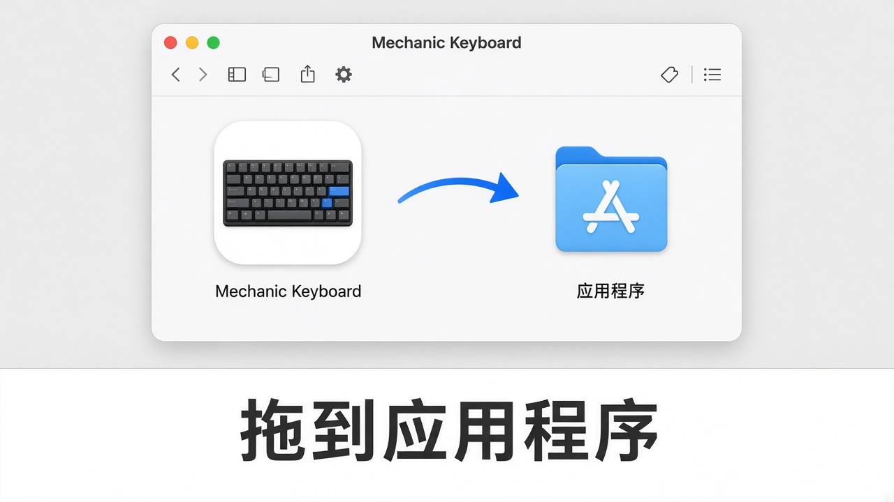
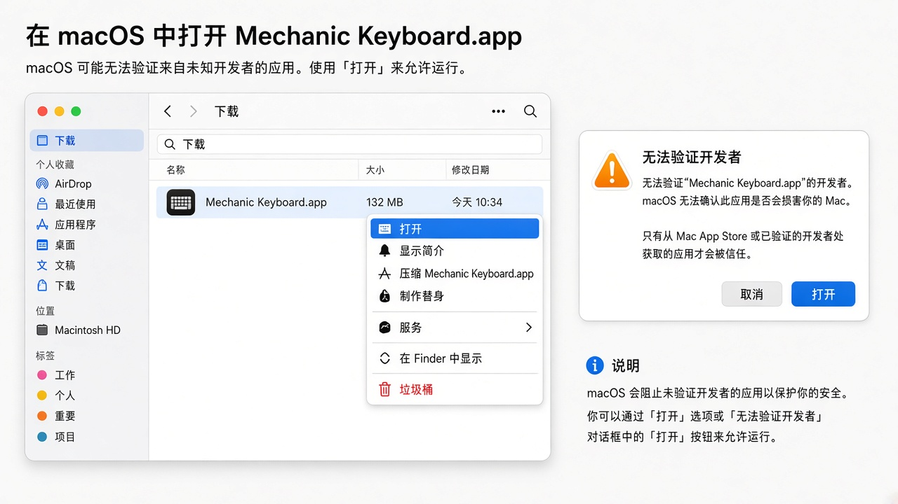
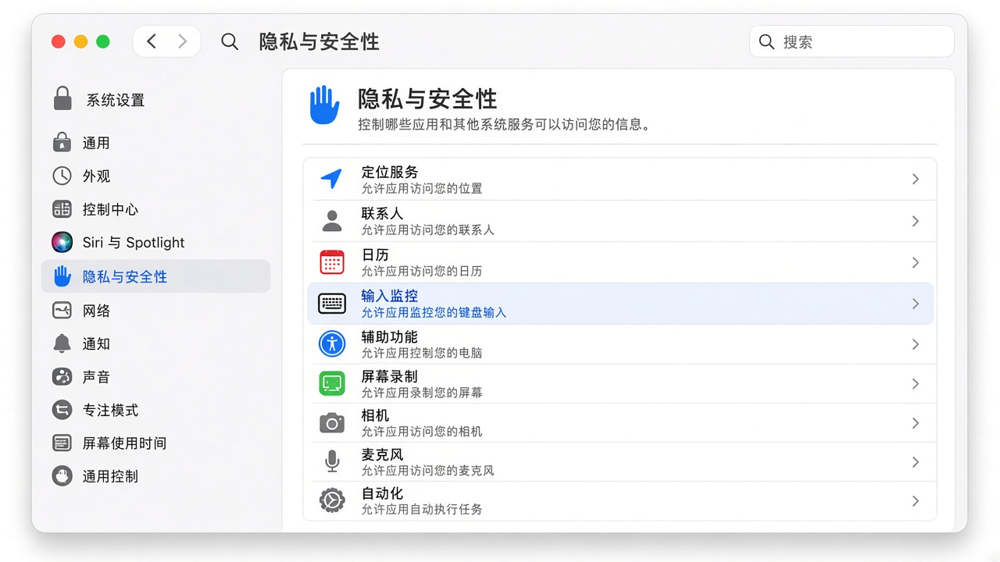
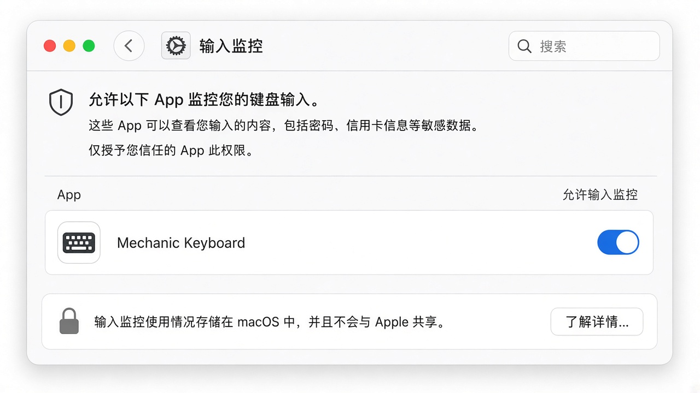
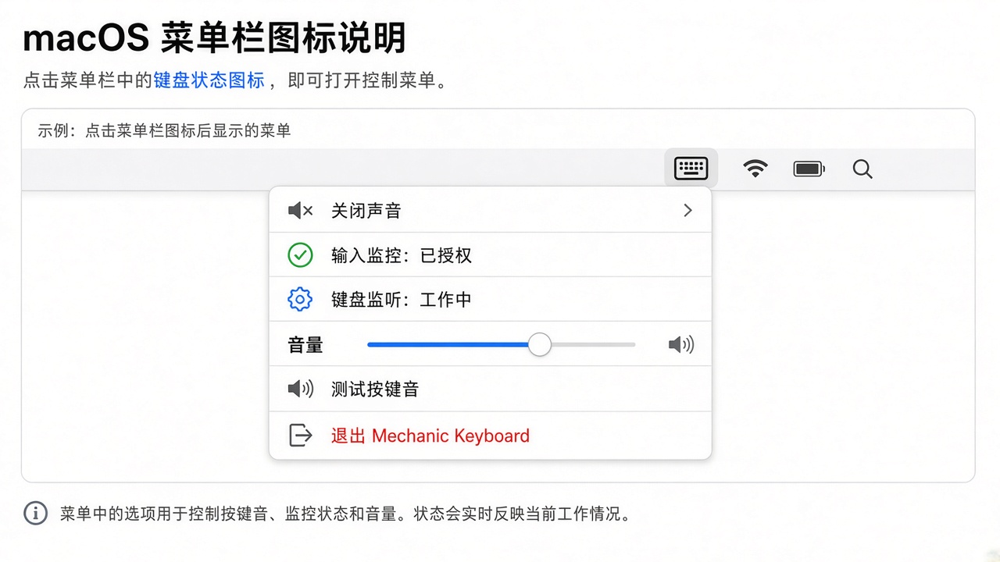

Mechanic Keyboard 使用说明
Mechanic Keyboard 是一款 macOS 菜单栏小工具：你打字时，它会播放机械键盘风格的按键音。
它只监听按键事件来播放本地音效，不会记录、保存或上传你敲了什么字。
需要什么权限？
| 权限 | 中文名称 | 是否必须 | 用途 |
|---|
| Input Monitoring | 输入监控 | 必须 | 在后台听到全局按键，才能播放按键音 |
说明：系统设置里这项叫「输入监控」，不是「辅助功能 / Accessibility」。
若菜单里显示「输入监控：未授权」或图标发橙，按下面步骤打开即可。
1. 安装
- 打开朋友发来的
MechanicKeyboard-*.dmg - 把 Mechanic Keyboard 拖到右边的 Applications（应用程序）

把 App 拖到应用程序- 到「应用程序」里找到 Mechanic Keyboard，双击打开
2. 第一次打不开？（Gatekeeper）
未公证的测试包，双击可能提示「无法验证开发者」。按下面做一次即可：
- 在 应用程序 里选中
Mechanic Keyboard - 右键（或双指点按）→ 打开
- 在弹窗里再点一次 打开

右键打开以绕过首次拦截之后正常双击就能启动。
3. 授予「输入监控」权限（最重要）
没有这项权限，App 听不到按键，也就不会出声。
方法 A：从 App 菜单跳转（推荐）
- 看屏幕右上角菜单栏，找到键盘图标 ⌨︎
- 点一下，选择 Grant Input Monitoring...
- 系统会打开「隐私与安全性」相关页面
- 按下面「方法 B」把开关打开
方法 B：手动打开系统设置
- 打开 系统设置（System Settings）
- 进入 隐私与安全性（Privacy & Security）
- 在列表里找到并点开 输入监控（Input Monitoring）

系统设置 → 隐私与安全性 → 输入监控- 在列表中找到 Mechanic Keyboard
- 把右侧开关打开（如有锁图标，先点锁并输入密码）
- 若列表里没有它：先启动一次 App，或点列表下方 ＋ 从「应用程序」里添加

打开 Mechanic Keyboard 的输入监控开关- 打开权限后，退出并重新打开 Mechanic Keyboard（菜单 → Quit）
4. 确认已经生效
点菜单栏 ⌨︎ 图标，理想状态类似：
- Input Monitoring: Granted（输入监控：已授权）
- Keyboard Monitor: Active（键盘监听：工作中）
- 图标不再显示橙色警告色

菜单栏状态正常然后：
- 点菜单里的 Test Click，应能听到一声点击
- 在任意 App 里正常打字，每次按下（非长按连发）都会有按键音
- 可用菜单里的 Volume 滑杆调节大小；不需要时选 Disable Sound
5. 常用功能
| 菜单项 | 作用 |
|---|
| Enable Sound / Disable Sound | 开/关按键音 |
| Volume | 调节音量 |
| Choose Sound Files... | 选择自定义音频（可多选，随机播放） |
| Use Built-in Sound | 恢复内置音效 |
| Test Click | 试听一声 |
| Quit Mechanic Keyboard | 退出 |
6. 常见问题
完全没有声音？
- 确认菜单不是 Disable Sound
- 确认音量滑杆不是 0，系统输出设备没静音
- 确认 输入监控 已打开，且菜单显示 Keyboard Monitor: Active
- 关掉 App 再开一次；仍不行就在「输入监控」里关掉再打开该开关
图标是橙色？
表示键盘监听未就绪（多半是权限未给，或刚给权限后还没恢复）。按第 3 步检查「输入监控」，然后重启 App。
换电脑 / 重装后要重新授权吗？
要。换机器、删掉重装，或从「应用程序」换到别的路径再运行，系统常会要求重新打开「输入监控」。
支持 Intel Mac 吗？
当前测试包为 Apple Silicon（arm64）。Intel Mac 需要单独的 Intel/通用架构包。
会不会上传我的键盘内容？
不会。权限只用于本地播放音效；不记录、不存储、不上传按键内容。
7. 快速检查清单
- [ ] 已拖到「应用程序」
- [ ] 首次如被拦截，已用「右键 → 打开」
- [ ] 「输入监控」里 Mechanic Keyboard 已打开
- [ ] 菜单显示监听 Active，Test Click 有声音
- [ ] 打字时有按键音
有问题把菜单里这几项的状态（输入监控 / 键盘监听）截图发给对方即可排查。